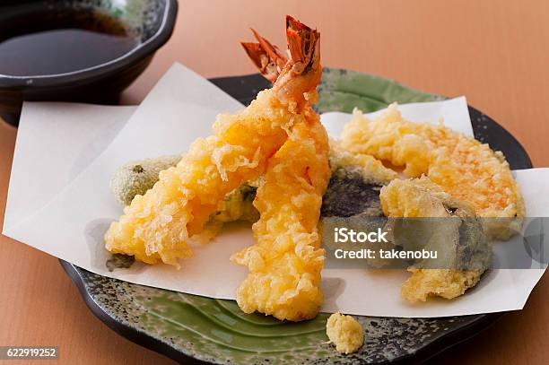

美食介紹(未做連結)Food

飯糰
日本飯糰，又稱「おにぎり」，是一種以米飯為主要成分，包裹著各種餡料或海苔的傳統美食。常見的餡料包括鮭魚、梅子或醃漬梅，是日本人生活中常見的方便且營養豐富的食物。

麵食
日本麵食多樣，包括拉麵、烏龍麵、蕎麥麵等，每種都有獨特的風味和口感。拉麵以豚骨、豬肉或雞湯為基底，配以麵條和各種配料，是最受歡迎的一種。

壽司
日本壽司是一種源自日本的傳統美食，以新鮮的生魚片和醋飯為主要材料。包括握壽司、刺身和捲壽司等多種風味。其精緻的製作工藝和多樣的口味吸引了全球食客的喜愛。

炸物
日本炸物豐富多樣，包括天婦羅、炸豬排、炸蝦等。以麵粉、蛋液和麵包糠裹住食材後油炸而成，口感酥脆。天婦羅以各種蔬菜或海鮮為主，常伴有蘸醬享用。